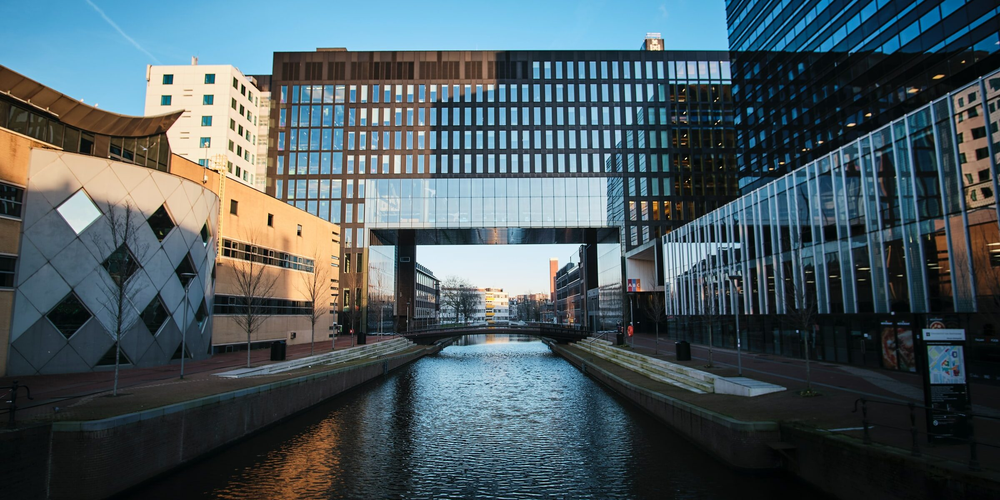
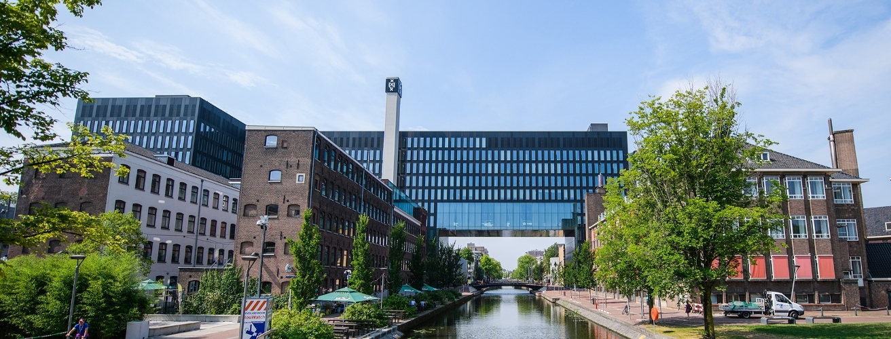

Я планую вступати в Університет Амстердаму, на спеціальність "Міжнародне бізнес-адміністрування".У параграфах нижче я зазначу деяку, базову інформацію про цю професію, і як вона викладається в даному університеті.

Бізнес-адміністрування - це широка дисципліна. Ви вивчаєте такі курси, як фінанси, маркетинг, бухгалтерський облік, стратегія, міжнародний бізнес, ділова етика та управління даними. Це все важливі аспекти ефективного та результативного управління компанією.
Ви будете виконувати багато завдань у невеликих командах. Цей процес навчить вас швидко та ефективно співпрацювати з однокурсниками, кожен з яких має інший (потенційно міжнародний) досвід. Роботодавці також високо цінують цю навичку.
Можливості безмежні. Ось деякі з багатьох прикладів потенційних роботодавців: транснаціональні корпорації, банки, пенсійні фонди та страхові компанії, державні міністерства, наукові установи, консалтингові фірми, стартапи (створення власного бізнесу). Більшість студентів продовжують навчання на спеціалізованому магістерському ступені. Зі ступенем магістра ви будете ще більш привабливими для роботодавців.
Через те, що це закордоний навчальний заклад для вступу абітурієнта з України НМТ не потрібно. Але треба мати гарний рівень англійської, який підкіплений тестом (IELTS, TOEFL) і також пройти їх осообливий тест з математики, оскільки на кінець школи в Україні і Нідерландах рівень математики може різнитися. Тож у таблиці нижче зазначені зайняття, які я витрачаю на підготовку.
| Номер | Зайняття | Кількість годин |
|---|---|---|
| 1 | Математика | 1 |
| 2 | Англійська з вчителем | 2 |
| 3 | Англійська самостійно | 2 |
Натиснувши на малюнок нижче, ви перейдете на сторінку університету, де зможете отримати більше інформації.
